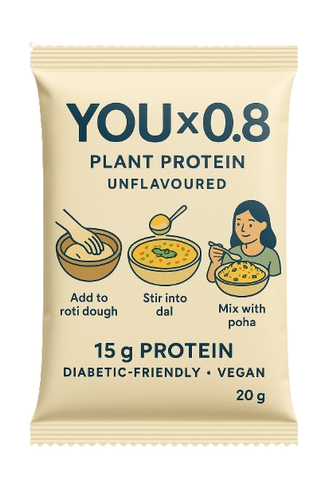

ekScoop is on a mission to empower local Indian retailers and health-conscious families by bridging the gap between quality nutrition and everyday foods. We believe strength starts at the grassroots — from your neighborhood shop to the meals you prepare at home.
We're a movement to transform India's health landscape
We started with a single goal — to help Indian families meet their daily protein needs without changing their food habits. That’s how YOU x 0.8 was born — an unflavoured, vegan protein formula that blends seamlessly into foods like roti, dal, poha, and curd.

While big brands focus on clicks, we focus on community
{{ item.description }}
We combine scientific formulation, Indian sensibilities, and community-first distribution to deliver products you can trust — with lab reports, verified ingredients, and no marketing fluff.
From QR-code-based transparency to regionally voiced storytelling, we make health real, relatable, and rooted in India.
Whether you're a retailer, home cook, health enthusiast, or just curious, ekScoop is here for you.
Let's make India stronger — one meal, one scoop, one store at a time.